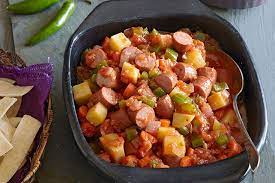

Hot Dog Soup

Ingedients
- 1 onion, chopped
- 2 tablespoons margarine
- 3 potatoes, peeled and cubed
- 1 (8 ounce) can tomato sauce
- 1 (14.5 ounce) can chicken broth
- 1 (9 ounce) package frozen green beans
- 1 (16 ounce) package beef frankfurters, cut into bite size pieces
Directions
- Place the onion and margarine in a large saucepan over medium heat.
- Slowly cook and stir until the onion is soft.
- Mix in the potatoes and enough water to cover. Bring to a boil.
- Reduce heat and mix in the tomato sauce, chicken broth, green beans and frankfurters.
- Simmer 30 minutes, or until potatoes are tender.
- Enjoy! *Goes great with a slice of Honey Wheat Bread